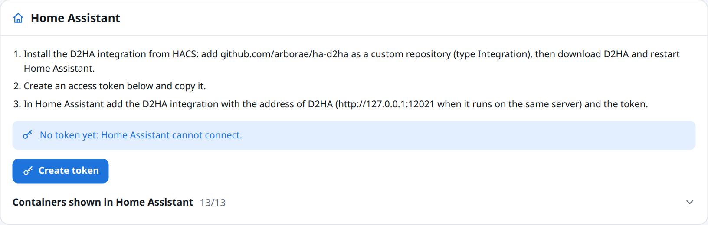

Settings
Settings has five sections: account and security, Home Assistant, updates and session, Telegram notifications, and about.
Account and security
Change password
Enter the current password and the new one twice (at least 10 characters; passwords that are too easy to guess are refused). Your other devices are signed out.
Two-factor authentication
- Press Turn on two-factor authentication.
- Scan the QR code with an authenticator app (Aegis, Google Authenticator, 1Password…), or type the key shown under it.
- Enter the code the app shows and press Confirm. Your other devices are signed out.
From then on, signing in asks for the code too. To turn it off, D2HA asks for the password and a code.
If codes are refused, check the time of your phone: the codes depend on it.
Home Assistant

- The three steps to connect Home Assistant, explained on Home Assistant integration.
- Create token: the token is shown once. Copy it into Home Assistant.
- New token replaces it (the old one stops working) and Revoke disconnects Home Assistant until you create a new one.
- Containers shown in Home Assistant: one switch per container. Hidden containers get no entity in Home Assistant; changes apply at the next refresh of the integration.
Updates and session
| Setting | Choices |
|---|---|
| Check for updates every | 1, 3, 6 (default), 12 or 24 hours |
| Sign out after inactivity | 15 minutes, 30 minutes (default), 1, 4 or 24 hours |
The first check interval comes from D2HA_CHECK_INTERVAL_HOURS on a new install; after that, this setting decides.
Telegram notifications
When the bot is configured, choose what deserves a message, the language of the messages, and send a test. The Telegram notifications page has every detail.
About
| Line | Shows |
|---|---|
| D2HA | The version running |
| Docker | The version of Docker Engine |
| Mode | Updates enabled, or Read only with D2HA_READ_ONLY=true |
| Project | The link to the project on GitHub |
Something wrong or missing on this page? Open an issue.